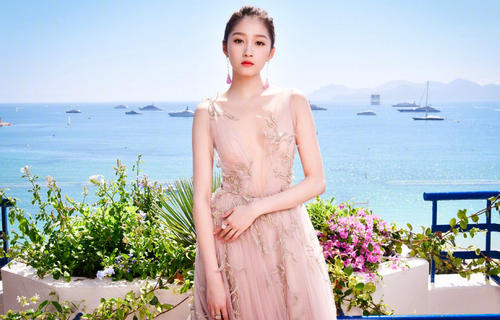
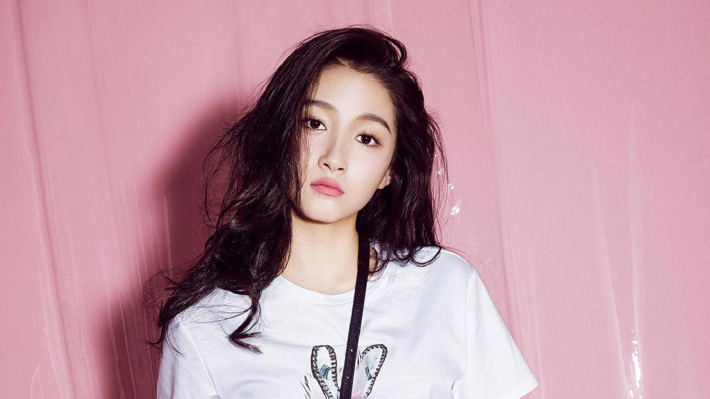
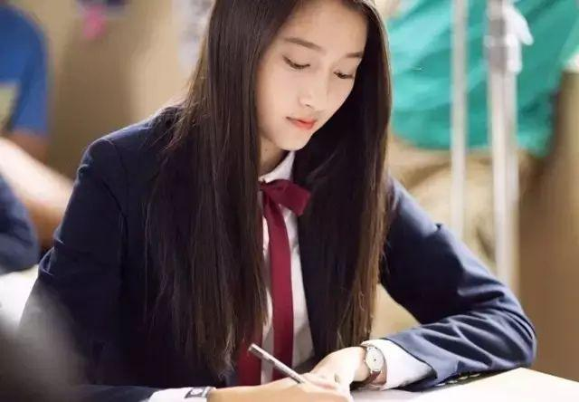

关晓彤
关晓彤（英文名：Traey Miley／Gabrielle Guan，1997年9月17日－），出生于北京市，中国女演员、歌手，满族人，
满姓为瓜尔佳氏，父亲是影视演员关少曾，祖父是北京琴书大师关学曾。所属经纪公司为光线传媒。4岁开始拍戏，
参演影视作品超过100部；现就读于北京电影学院2016级表演系。
重要事件
- 2001年，完成个人出道作品《烟海沉浮》。
- 2005年，凭借奇幻动作片《无极》被观众认识 。
- 2008年，因在年代爱情剧《幸福还有多远》中饰演大丫而崭露头角。
- 2014年，凭借时尚情感剧《一仆二主 》获国剧盛典观众喜爱的新人女演员奖。
- 2015年，发行个人音乐专辑《十八》。
- 2016年，因主演都市爱情剧《好先生》而获得广泛关注，并凭借该剧获得第23届上海电视节白玉兰奖最佳女配角奖 。
- 2017年，主演的青春校园励志剧《极光之恋》播出 。
- 2018年7月23日，主演的青春热血格斗剧《甜蜜暴击》播出 。
- 2019年1月4日，关晓彤为中国电影频道评选的演技派新生代四小花旦最终人选。
- 2020年8月27日，关晓彤名列《2020福布斯中国名人榜》第71位
成就和荣誉
评选奖项
- 2020-01-08 我是头条·2019今日头条年度盛典年度风尚明星
- 2019-12-19 第六届中国电视好演员年度盛典“绿组”最佳女演员
- 2019-06-01 中国青年明星公益榜样盛典中国青年明星公益新力量
- 2018-12-01 2019爱奇艺尖叫之夜年度银幕突破艺人
- 2018-06-17 2018微博电影之夜微博最受期待演员
- 2018-04-30 “五月的鲜花”优秀青年演员
- 2018-03-13 电视剧品质盛典年度青春号召力剧星
- 2017-12-03 腾讯视频星光大赏年度青春大势艺人
- 2016-12-25 移动视频风云盛典年度潮流人气榜样
- 2016-12-23 搜狐时尚盛典年度人气女明星
- 2015-01-01 国剧盛典观众喜爱的新人女演员
- 2014-12-06 尖叫2015爱奇艺之夜年度电视剧新人
- 2014-04-23 北京师大附中“艺术之星”
主要作品
| 首播年份 | 剧名 | 角色 |
|---|
| 2001年 | 烟海沉浮 | 平平 |
| 2003年 | 不弃今生 | 妞妞 |
| 2004年 | 给爱情照张相 | 彤彤 |
| 2005年 | 红衣坊 | 赵雪茗 |
| 2006年 | 爱在来时 | 素雅
|
| 2007年 | 再生缘 | 孟丽君(童年) |
| 2008年 | 糊涂小天使 | 昆仑老母 |
| 2009年 | 大理公主 | 小阿细 |
| 2010年 | 家住小区 | 唐乐乐 |
| 2011年 | 向东是大海 | 大凤儿 |
| 2012年 | 糊涂的爱 | 郭家慧 |
| 2013年 | 心花怒放 | 柳燕妮 |
| 2014年 | 父母爱情 | 安怡 |
| 2015年 | 妻子的谎言 | 陈璞玉 |
| 2016年 | 我们的纯真年代 | 苦瓜 |
| 2017年 | 逆袭之星途璀璨 | 关晓彤 |
| 2018年 | 凤囚凰 | 刘楚玉 |
| 2019年 | 我是班主任 | 小关老师 |
| 2020年 | 什刹海 | 庄晓晓 |
| 2021年 | 我就是这般女子 | 班婳 |
生活照



生平
关晓彤出生于北京市的一个艺术世家，祖父关学曾是北京琴书大师，
父亲关少曾是影视演员，由于家庭文化的熏陶，她从小也热爱艺术，
喜欢舞蹈和钢琴。4岁半的时候，关晓彤和父亲关少曾一起拍戏，
自此出道。身高172公分，2016年4月，关晓彤北京电影学院艺考90.41分
第一名，六月高考成绩公布552分。2016年7月27日，被北京电影学院表演
学院表演专业本科录取。